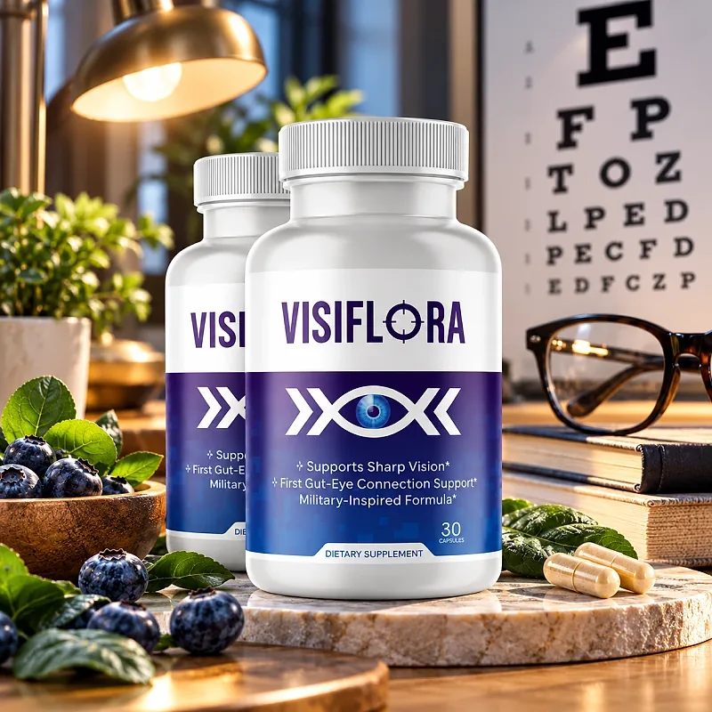
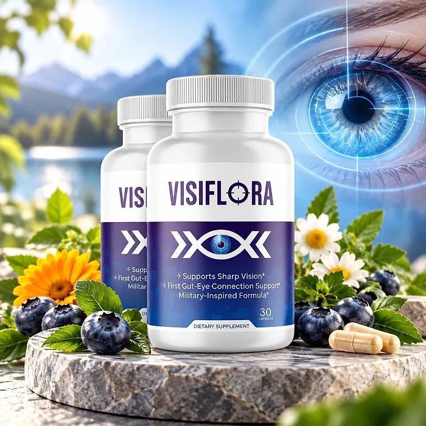

What Is Visiflora And How Does It Work?
Visiflora is a dietary supplement in capsule form designed to support sharp vision, eye comfort, and clarity for adults who want to address the tired eyes, strain from screens, and trouble seeing at night that can build up with age and modern routines through a natural, dependable approach — without complicated protocols or temporary quick fixes.
It utilizes a simple daily capsule with a 22-in-1 formula that includes Astaxanthin, Lutein and Zeaxanthin, Bilberry, Saffron, Eyebright, Ginkgo Biloba, and Taurine to support the retina, the macula, and healthy blood flow to the eyes, helping the body maintain its natural balance throughout the day.
The ingredients in Visiflora are carotenoids, vitamins, minerals, and botanical extracts that, according to the official website, combine premium eye-support nutrients with gut-targeting ingredients, based on research into the gut-eye connection, particularly for adults who prefer one simple capsule a day over multiple products.
Rather than acting as a short-lived fix like eye drops, Visiflora focuses on supporting the eyes from within, including the gut barrier, as the official website explains, working gradually alongside regular eye exams, screen breaks, and good lighting.
With consistent daily use, a formula of this kind is intended to help with less eye fatigue, more comfortable focus, and greater confidence when driving or reading, especially when combined with a diet rich in colorful vegetables, enough sleep, and protection from bright light.
From a practical standpoint, Visiflora is a daily vision support capsule designed to support wellness from within — helping you see comfortably, stay active, and remain in control of your health.
Described by the official website as non-GMO, stimulant-free, and 100% vegan, Visiflora is designed for regular daily use, focusing on safety, purity, and quality for those seeking a natural, non-prescription route to eye wellness.
Visiflora Ingredients
The official website describes Visiflora as a 22-in-1 vision-essential formula, organized in four groups chosen to support the retina, the macula, and eye comfort as part of a consistent daily routine:
Vision Defense Matrix — Astaxanthin, Vitamins C and E, Copper, Selenium, and Chromium: Antioxidants and minerals that help protect eye tissue from oxidative stress.
Gut-Eye Barrier Complex — Grape Seed Extract, Rutin, and Quercetin: Plant compounds included to support the barriers that protect the eyes.
Taurine and Alpha Lipoic Acid: Nutrients that support retinal cells and help regenerate other antioxidants.
Vision Performance Boosters — Ginkgo Biloba, Coleus Forskohlii, and Eyebright: Botanicals traditionally used to support blood flow to the eyes and optic nerve function.
Macular and Lens Protection Blend — Vitamin A (as Beta Carotene), Lutein and Zeaxanthin (from Marigold), and Zinc (11 mg): Nutrients well known for supporting low-light vision and filtering blue light.
Bilberry, Lycopene, and Saffron Extracts: Fruit and spice extracts that support night vision, the lens, and visual sharpness.
Together, these ingredients are designed to support clear, comfortable vision from within. The official website gives the zinc dose (11 mg) but does not publish the full Supplement Facts panel with the amount of each ingredient, so the bottle label is the reference to check.
Visiflora is designed for daily use, offering a natural, non-prescription approach to supporting eye wellness, without stimulants or complicated routines.
Visiflora Side Effects
Visiflora is generally considered well tolerated and is designed for adults of different ages and lifestyles who are looking for a safe, natural, and balanced approach to eye wellness, especially those who prefer an easy one-capsule daily routine to support vision, comfort, and clarity without resorting to risky solutions with severe side effects.
The official website describes the formula as non-GMO, stimulant-free, 100% vegan, non-habit forming, and gentle on the stomach, made with premium ingredients selected for purity, reinforcing consistency, safety, and reliability.
With no widespread reports of serious side effects, Visiflora is generally considered a well-tolerated option. A few points deserve attention: ginkgo biloba and grape seed may add to the effect of blood thinners; chromium and alpha lipoic acid can lower blood sugar, so people who take medication for blood sugar should talk to a doctor; and saffron is used in small amounts in supplements. Sudden vision changes, eye pain, or flashes of light need prompt evaluation by an eye doctor. It is not intended to diagnose, treat, cure, or prevent any disease, and individual results may vary.
Pregnant or nursing women, people under 18, and anyone with a medical condition or taking prescription medication should consult a physician before using Visiflora, as the official website also recommends, ensuring it fits safely within their personal wellness plan, and should keep their regular eye exams.
Visiflora Dosage
The recommended Visiflora dosage is one capsule daily with food, according to the official FAQ, and it is designed to fit easily into a daily routine, making consistency simple and convenient. Formulated as a gentle, easy-to-take vegan capsule, it requires no powders to mix, no drinks to prepare, and nothing to measure.
The official website sums it up as no complicated timing or messy routines. Taking the capsule with the same meal each day, for example breakfast, makes the routine easy to remember, and the fat in a meal also helps absorb carotenoids such as lutein and astaxanthin.
For best results, consistency is key. Each bottle contains 30 capsules, a one-month supply, and the official FAQ says many users notice changes in eye comfort within a few weeks, which is why many people make it part of an ongoing routine.
There is no need for complex schedules or multi-step routines. One simple daily capsule is designed to build support gradually alongside screen breaks, good lighting, sunglasses outdoors, and a diet rich in leafy greens.
As with any dietary supplement, it's important not to exceed the recommended dose and to check the label on your bottle. Visiflora works best when used regularly, combined with proper hydration, balanced nutrition, and healthy daily habits.
Visiflora – Refund Policy
You can order Visiflora with confidence, knowing that every purchase is protected by a 60-day money-back guarantee counted from the day you receive the order. This allows you to try the formula and decide if it delivers the support you expect.
According to the refund policy on the official website, all items can be returned within 60 days after they are received for a full refund minus any shipping fees, as long as all the items are sent back, in good physical condition. The return shipping cost is paid by the customer.
How the refund process works: Send all the items to the warehouse at 19655 E 35th Dr #100, Aurora, CO 80011. The policy says it is fine to ship on the 59th day even if the package arrives a few days later. Once the return is received and inspected, you receive an email, and the refund is credited to your original payment method.
Customer Support Contact Information: support@visiflora.com for product questions; for orders, BuyGoods, the retailer, at +1 (302) 200-3480, as listed on the contact page of the official website.
Refund Processing Time: According to the policy, the refund is processed within a few days after the package is received, and the time for the amount to appear depends on your bank.
This refund policy is designed to give customers a clear and transparent experience when trying Visiflora.
Visiflora Customer Reviews
-
Corinne F. — ArizonaVerified Purchase – 6 Bottles
“Visiflora is unlike anything I've tried. My eyes feel less tired, and my night vision is noticeably better!”
-
James V. — OhioVerified Purchase – 6 Bottles
“For the first time in years, I can drive at night without squinting or straining. I feel more confident!”
-
Rachel S. — FloridaVerified Purchase – 6 Bottles
“I wasn't expecting such a difference, but … I can finally read without eye fatigue.”
Visiflora – Where To Buy
Visiflora is sold through its official website, so if you decide to try it, it's important to be careful about where you purchase it. The official website is the only sales channel the manufacturer lists, and it does not point to marketplaces such as Amazon, eBay, or Walmart.
Listings on third-party platforms may look similar but cannot be verified as authentic, raising concerns about safety, quality, and ingredient freshness. Products purchased outside the official source may not be covered by the 60-day guarantee.
For this reason, it makes sense to purchase Visiflora only through the official website. Buying directly from the official source ensures you receive the authentic original product, made in the USA, with access to customer support and the full guarantee. According to the official website, every order is a one-time purchase, with no subscription or auto-ship, and orders are processed by BuyGoods, the retailer named on the site.
To avoid counterfeit batches and ensure maximum quality, always verify that you are ordering from the official Visiflora website before completing your purchase.
To ensure you’re getting the authentic product, most users choose to visit the official website.
Is Visiflora A Scam?
Based on what the official website discloses, Visiflora does not appear to be a scam. It is a real capsule supplement, sold through an established retailer (BuyGoods), and formulated to support sharp vision, eye comfort, and clarity as part of a consistent routine.
The ingredients used in Visiflora — Astaxanthin, Lutein and Zeaxanthin, Bilberry, Saffron, Eyebright, Ginkgo Biloba, and Taurine, plus vitamins and minerals — are well known in eye health research, and the official website describes the role of each group in the 22-in-1 formula.
In addition to its formula, Visiflora is sold with a discreet one-time purchase that appears as "BuyGoods" on the statement, a support email, and a published return address in Aurora, Colorado, with a focus on clarity and simple returns.
The customers quoted on the official website describe less tired eyes, easier night driving, and reading without fatigue. A fair point of criticism is that the website does not publish the full Supplement Facts panel and uses strong claims, such as figures about blood flow to the retina and the gut-eye "LPS" theory, that a supplement cannot guarantee. Results vary from person to person, and no supplement replaces glasses, prescribed treatment, or regular visits to an eye doctor.
Visiflora is backed by a 60-day money-back guarantee, and orders are one-time purchases with no subscriptions or hidden fees. The return steps and the return address are published on the official website, which gives customers a clear path if the product does not meet their expectations.
If you're looking for a simple daily capsule to support vision, eye comfort, and clarity without complicated routines, Visiflora is worth considering — especially when purchased directly from the official website.
For those who want to verify product details or check current availability, the official Visiflora website remains the safest option.
